Chapter 60: Aakhri imtihaan¶
Aakhri imtihaan — poori kitaab ek saath
Yahan kuch naya nahi sikhaya jaayega. Ye test sirf ye dekhne ke liye hai ki kitaab ka kaunsa hissa aapke andar baith gaya aur kaunsa dobara khola jaana chahiye. Sawaal jaanbujh kar mila-jula hai — ek sawaal tense ka, agla phrasal verb ka, phir article ka. Asli zindagi me bhi aisa hi hota hai: koi aapko pehle nahi batata ki ab grammar ka chapter aa raha hai.
- 1Test me kya-kya hai
- 2Shuru karne se pehle — teen minute ka warm-up
- 4Galti kahan hui? Seedha wahan waapas jaao
Kaise dein
Ek hi baithak me poora karo, aur jawaab dekhne se pehle ek baar khud socho. Galti hona bura nahi hai — galti kyun hui, wo "Dhyan do" wale hisse me likha hai. Score 80% se upar aaye to kitaab aapki ho gayi. 50 se neeche aaye to koi baat nahi, dobara shuru karo — par is baar sirf un chapters par ruko jahan galti hui.
60.1 Test me kya-kya hai¶
Neeche ki patti dikhati hai ki 30 sawaal kitaab ke paanch hisson me kaise baate gaye hain. Agar aapki galtiyan ek hi rang me jamaa ho rahi hain, to seedha us hisse me waapas jaao — poori kitaab dohraane ki zaroorat nahi.

Chhe tarah ke sawaal
Chunno (MCQ) · khaali jagah bharo (fill) · galti dhoondo (spot) · shabd jamao (reorder) · jodi banao (match) · bol kar dikhao (speak). "Bol kar dikhao" wale sawaal me mic chahiye. Na ho to sun kar dohra lo aur aage badh jao — score par asar nahi padta.
60.2 Shuru karne se pehle — teen minute ka warm-up¶
Ye teen galtiyan poori kitaab me sabse zyada baar aayi hain. Ek baar dekh lo, sudhre hue vaakya ek baar bol lo, phir test shuru karo.
Teen cheezein, aakhri baar
- Galat: I am working here since three years.
- Sahi: I've been working here for three years.
-
Kyun: Duration ke saath for, point ke saath since. Aur chalta hua kaam = have been + -ing.
-
Galat: She is doctor and she is good in surgery.
- Sahi: She's a doctor and she's good at surgery.
-
Kyun: Pesha ke saath hamesha a/an, aur mahir hona = good at.
-
Galat: Tell me where is the lift.
- Sahi: Could you tell me where the lift is?
- Kyun: Sawaal jab bade vaakya ke andar aata hai, to kram seedha ho jaata hai — verb peechhe.
60.3 Aakhri imtihaan — poori kitaab¶
Exercise 1
Is vaakya me 'quickly' kaunsa part of speech hai? — She finished the report quickly.
- Adverb
- Adjective
- Verb
- Preposition
Hint: Ye batata hai ki kaam kaise hua.
Jawaab
Adverb
Adverb verb ke baare me batata hai — kaise, kab, kahan. Yahan 'quickly' batata hai ki 'finished' kaise hua.
Exercise 2
Ravi and I finished the work ___ .
Hint: Hum dono ne khud — reflexive roop.
Jawaab
ourselves
Reflexive pronoun subject se milta hai: I → myself, we → ourselves. Dhyan rakho: 'ourself' nahi hota.
Exercise 3
Kaunsa vaakya sahi hai?
- I have been waiting for twenty minutes.
- I am waiting since twenty minutes.
- I wait since twenty minutes.
- I have waited since twenty minutes.
Jawaab
I have been waiting for twenty minutes.
Jo kaam pehle shuru hua aur abhi chal raha hai = have been + -ing. Aur duration ke saath 'for', point ke saath 'since'.
Exercise 4
Galat shabd dhoondo.
She didn't came to the meeting yesterday.
Jawaab
Galat shabd: came.
Sahi roop: She didn't come to the meeting yesterday.
'Did' pehle se past bata deta hai, isliye verb apne pehle roop me aata hai — didn't come.
Exercise 5
By the time we reached the platform, the train ___ .
- had left
- has left
- left
- was leaving
Hint: Past me do kaam — kaun pehle hua?
Jawaab
had left
Past me do kaam hon, to jo pehle hua uske saath 'had' lagta hai. Isi ko past perfect kehte hain.
Exercise 6
She ___ the answer, so just ask her.
Hint: Soch wale verbs continuous me nahi jaate.
Jawaab
knows
Know, understand, believe, like, want — ye continuous me nahi jaate. 'She is knowing' galat hai.
Exercise 7
Kaunsa vaakya sahi hai?
- It took an hour to find a university nearby.
- It took a hour to find an university nearby.
- It took an hour to find an university nearby.
- It took a hour to find a university nearby.
Hint: a/an aawaz se tay hota hai.
Jawaab
It took an hour to find a university nearby.
Hour ka H chup hai, aawaz 'aa' se shuru — an. University ki aawaz 'yoo' se shuru hoti hai, jo consonant jaisi hai — a.
Exercise 8
Ek shabd bekaar hai — us par tap karo.
I really enjoy the music in my free time.
Jawaab
Galat shabd: the.
Sahi roop: I really enjoy music in my free time.
Aam baat (general) me 'the' nahi lagta. 'The music' matlab wo khaas music jo abhi baj raha hai.
Exercise 9
My sister is very good ___ mathematics.
Hint: Mahir hona.
Jawaab
at
Kisi vishay me mahir hona = good at. Good with = cheezein ya log sambhalne me achha.
Exercise 10
Ek shabd hata dena chahiye — use dhoondo.
Let us discuss about the new policy on Monday.
Jawaab
Galat shabd: about.
Sahi roop: Let's discuss the new policy on Monday.
Discuss ke andar hi 'about' shaamil hai. Isi family me: enter the room, reach Delhi, order two teas.
Exercise 11
The meeting is ___ 4 pm ___ Monday ___ July.
- at / on / in
- in / at / on
- on / in / at
- at / in / on
Jawaab
at / on / in
Exact time = at, din/taarikh = on, mahina/saal = in. Khaas se bada — yahi tarteeb hai.
Exercise 12
Each of the three teams ___ its own budget.
Hint: Each singular hai ya plural?
Jawaab
has
Each, every, everyone, nobody — sab singular hain, chahe baad me plural dikhe.
Exercise 13
Sawaal sahi kram me banao.
Shabd: jacket / Where / you / did / that / buy
Jawaab
Where did you buy that jacket
Sawaal me helping verb (did) subject (you) se pehle aata hai, aur uske baad verb apne pehle roop me.
Exercise 14
Kram galat hai — galat jagah wale shabd par tap karo.
Could you tell me where is the lift?
Jawaab
Galat shabd: is.
Sahi roop: Could you tell me where the lift is?
Jab sawaal bade vaakya ke andar aa jaaye, to kram seedha ho jaata hai — verb peechhe chala jaata hai.
Exercise 15
'The report was approved by the committee' ka active roop kaunsa hai?
- The committee approved the report.
- The report approved the committee.
- The committee was approving by the report.
- The report has approved the committee.
Jawaab
The committee approved the report.
Passive se active me jaate waqt 'by' wala hissa subject ban jaata hai, aur purana subject object.
Exercise 16
Rekha said that she ___ busy that evening.
Hint: Reported speech me tense ek kadam peechhe.
Jawaab
was
Kisi ki baat aage batate waqt tense ek kadam peechhe jaata hai: 'I am busy' → she said she was busy.
Exercise 17
Kaunsa vaakya punctuation ke hisaab se sahi hai?
- It's raining, so take its cover along.
- Its raining, so take it's cover along.
- Its raining, so take its cover along.
- It's raining, so take it's cover along.
Jawaab
It's raining, so take its cover along.
It's = it is. Its = uska. Apostrophe yahan possession nahi, shortcut batata hai.
Exercise 18
'Village' me zor kahan padta hai?
- Pehle hisse par — VIL-lage
- Doosre hisse par — vil-LAGE
- Dono par barabar
- Kahin nahi, saari aawaz barabar
Hint: Do hisse hain — VIL-lage.
Jawaab
Pehle hisse par — VIL-lage
English ke do-hisse wale zyada tar nouns me zor pehle hisse par aata hai. Yahi rhythm fluency banata hai.
Exercise 19
Bolte waqt soch ke liye waqt chahiye. Sabse behtar kya hai?
- That's a good question — let me think for a second.
- Basically basically wo aisa hai ki…
- Actually actually main batata hoon…
- Chup reh kar bees second rukna
Jawaab
That's a good question — let me think for a second.
Filler shabd (basically, actually) dohraane se bharosa girta hai. Ek poora chhota vaakya bol kar waqt lena natural lagta hai.
Exercise 20
Meeting me kisi ki baat samajh nahi aayi. Sabse natural line?
- Sorry, I'm not following.
- I am not understanding.
- I have a doubt in your talk.
- Please repeat it again.
Jawaab
Sorry, I'm not following.
'I'm not following' neutral hai — na aap kamzor lagte ho, na saamne wala galat. 'Repeat it again' me 'again' bekaar hai.
Exercise 21
This was lovely, but I should get ___ — it's getting late.
Hint: Nikalne ka narm tareeka.
Jawaab
going
'I should get going' = mujhe ab nikalna chahiye. 'I need to leave' se zyada polite aur zyada natural.
Exercise 22
'Naye form ne lagbhag saari galtiyan khatam kar dein' — kaunsa verb?
- eliminated
- enhanced
- authorized
- demonstrated
Jawaab
eliminated
Eliminate = poori tarah hata dena. Enhance achhe ko behtar karna hai, authorize adhikaar se ijaazat dena.
Exercise 23
Ek shabd bekaar hai — us par tap karo.
After two night shifts I was very exhausted.
Jawaab
Galat shabd: very.
Sahi roop: After two night shifts I was exhausted.
Exhausted pehle se sabse tez shabd hai. Zor chahiye to 'utterly exhausted' bolo, 'very' nahi.
Exercise 24
Interview me apne baare me kaunsa advanced shabd sabse achha lagta hai?
- pragmatic
- enigmatic
- nefarious
- onerous
Jawaab
pragmatic
Pragmatic = vyavhaarik, nateeja dekhne wala — taareef ka shabd hai. Enigmatic ka matlab hoga ki aapko koi samajh nahi paata.
Exercise 25
Music bahut tez hai. Sahi vaakya kaunsa hai?
- Please turn it down.
- Please turn down it.
- Please turn down.
- Please it turn down.
Hint: Pronoun kahan jaata hai?
Jawaab
Please turn it down.
Turn down separable hai, aur pronoun (it) majboori se beech me aata hai. 'Turn down it' kabhi sahi nahi hota.
Exercise 26
Kram galat hai — galat shabd par tap karo.
She will look the baby after this evening.
Jawaab
Galat shabd: after.
Sahi roop: She will look after the baby this evening.
Look after inseparable hai — object particle ke baad hi aayega, beech me kabhi nahi.
Exercise 27
Idiom ko uske matlab se jodo.
| A | B |
|---|---|
| on the same page | aaj ka kaam band karna |
| the ball is in their court | ummeed kam, par koshish |
| call it a day | ek hi samajh par hona |
| a long shot | ab faisla unka hai |
Jawaab
on the same page — ek hi samajh par hona; the ball is in their court — ab faisla unka hai; call it a day — aaj ka kaam band karna; a long shot — ummeed kam, par koshish
Ye chaaron office me roz sunai dete hain. Pehchaanna zaroori hai, bolna optional.
Exercise 28
Indian English ki aadat ko uske international roop se jodo.
| A | B |
|---|---|
| Myself Ravi | move the call up |
| I have a doubt | graduated in 2019 |
| prepone the call | I'm Ravi |
| passed out in 2019 | I have a question |
Jawaab
Myself Ravi — I'm Ravi; I have a doubt — I have a question; prepone the call — move the call up; passed out in 2019 — graduated in 2019
Chaaron India me poori tarah saaf hain — bas international call ke liye doosra gear chahiye.
Exercise 29
Email ki ek saaf line banao — bina 'kindly' aur 'needful' ke.
Shabd: can / we / so / release / invoice / Could / by / the / Friday / approve / you / payment
Jawaab
Could you approve the invoice by Friday so we can release payment
Formula: kya karna hai + kisko + kab tak. Teeno ek line me, aur baat bilkul saaf.
Exercise 30
Ye line bol kar dikhao. 'I have been' ko ek saath jodkar bolo, aur 'at' par halka zor.
I have been working here for three years and I am good at my job
Jawaab
Bolo: I have been working here for three years and I am good at my job
Ek line me teen cheezein theek hain — tense, preposition aur word order. Interview me yahi aapka pehla jawaab ban sakta hai.
Score ka matlab
80% se upar — kitaab aapki ho gayi. Ab practice ki jagah kitaab nahi, asli baat-cheet hai. Roz das minute kisi se English me baat karo.
50 se 80 — buniyaad majboot hai, bas kuch jagah dheeli hai. Chart dekho, galtiyon ka rang pehchaano, aur sirf un do-teen chapters par waapas jao.
50 se neeche — koi baat nahi, aur ye bura score bilkul nahi hai. Iska matlab sirf ye hai ki kitaab ek baar aur padhni hai. Doosri baar me cheezein bahut jaldi baithti hain, kyunki dimaag unhe pehchaanta hai.
60.4 Galti kahan hui? Seedha wahan waapas jaao¶
Score note kar lo, par usse zyada zaroori ye hai ki kis tarah ke sawaal me galti hui. Neeche ki table batati hai ki kahan waapas jaana hai.
| Galti is kism ki thi | Ye chapter dobara kholo |
|---|---|
| a / an / the chhoot gaya ya galat laga | a, an, the |
| since / for, had / have, didn't + verb | Saare 12 tenses |
| in / on / at, good in, afraid from | Preposition · 50 sabse aam galtiyan |
| Sawaal ka kram, "where is the lift" | Sawaal poochhna |
| has / have, each, news | Subject-verb agreement |
| Passive se active, reported speech | Active aur Passive · Kisi ki baat aage batana |
| it's / its, comma, capital | Viraam chinh |
| Zor kahan padta hai, filler words | Rhythm aur stress · Fluency |
| Natural phrase galat ya ajeeb laga | Basic se Native |
| Bada verb ya adjective galat jagah par | Verb upgrade · Sahi adjective chuno |
| turn down it, look the baby after | Phrasal verbs |
| Idiom ka matlab ya jagah galat | Idioms |
| Myself, revert back, prepone, doubt | Indian English ki aadatein |
| can / must / should, have to | can, could, should, must |
| enjoy to read, want going | to do ya doing? |
| who / which / that, lambe vaakya jodna | Chhote se bade vaakya |
| used to / be used to, I wish, had better | used to, wish, had better |
| get it done, Never have I…, What I need is… | Asar daar vaakya |
| Tez English samajh nahi aayi (gonna, wanna) | Native speed English |
| 15 ya 50, date, ₹ ki rakam bolna | Number, date, time, paise |
| Baat shuru karna, raay dena, call par baat | Small talk aur raay dena · Phone aur video call |
| Presentation ki shuruaat ya ant | Presentation dena |
| happy / unhappy / happiness — galat roop | Ek shabd se das shabd |
| do a mistake, strong rain jaisi jodi | Kaunsa shabd kiske saath |
| Doctor, bank, safar ya office ka shabd nahi mila | Roz ke vishay · Kaam aur duniya |
| affect / effect, lose / loose, borrow / lend | Milte-julte shabd |
| Spelling ki galti | Spelling ke niyam |
| Paragraph, email ya application ka dhaancha | Vaakya se paragraph · Email likhna · Application aur message |
| CV bullet, essay ya report | CV aur LinkedIn · Essay aur report |
| Sunkar samajhna ya dictation | Chhoti kahaniyan · Roz ki kahaniyan · Asli duniya ki English |
| Apna level aur agla kadam jaanna hai | IELTS, TOEFL aur aapka level |
Aakhri baat
English ek imtihaan nahi hai — ek aadat hai. Is kitaab ka asli maqsad ye nahi tha ki aap sab rules yaad kar lein. Maqsad ye tha ki jab aap English bolein, to aapke dimaag me "galti ho jaayegi" ka dar na rahe. Wo dar hat gaya, to baaki sab apne aap aa jaayega — thoda thoda, roz. Jo bolta hai wo seekhta hai. Jo galti se darta hai wo chup reh jaata hai. Aap bolne wale banein.